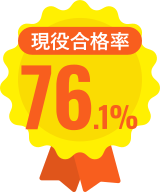
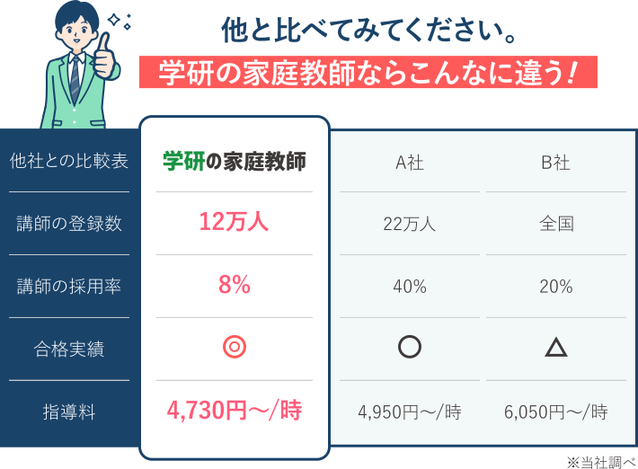
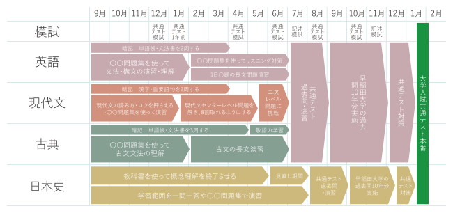
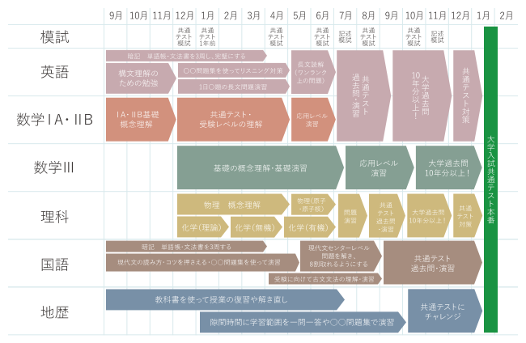
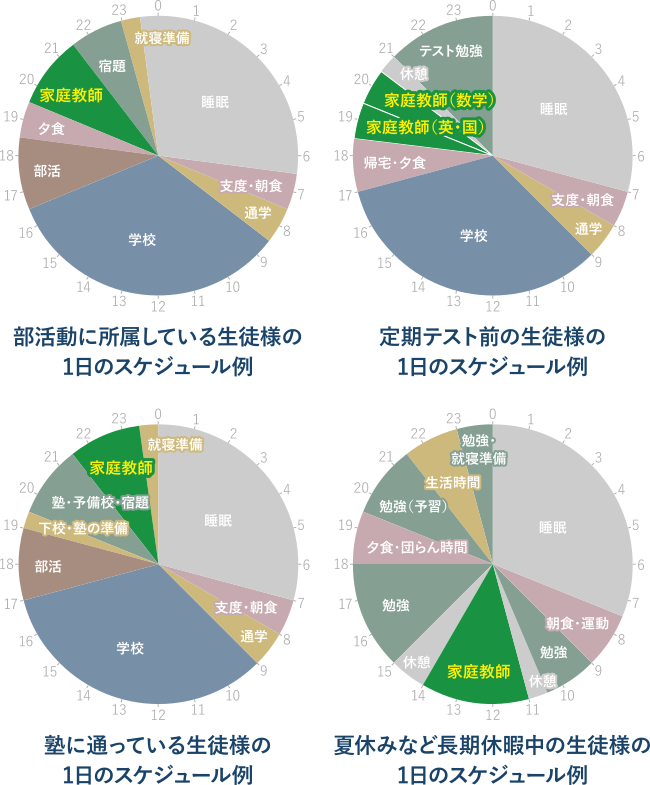
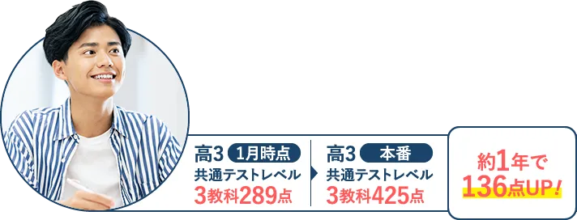

大学受験の合格実績
有名大学・難関大学への合格者続出!

-
難関国立大学合格実績
東京大学/京都大学/大阪大学/神戸大学/北海道大学/東北大学/名古屋大学/九州大学/東京工業大学/一橋大学/東京外国語大学/東京学芸大学/その他 国立大学医師薬学部 など多数
-
難関私立大学合格実績
慶應義塾大学/早稲田大学/上智大学/東京理科大学/学習院大学/明治大学/青山学院大学/立教大学/中央大学/法政大学/国際基督教大学/関西学院大学/関西大学/同志社大学/立命館大学 など多数
※当社調べ

-
学研のココが凄い!
学研独自のメソッドで、皆さん一人ひとりの学習状況や習熟度に応じて、完全オーダーメイドでカリキュラムを作成します！
-
学研のココが凄い!
学校や部活で忙しい高校生でも柔軟なスケジュールで対応します！テスト前や長期休暇中に集中的に受講することも可能です！
-
学研のココが凄い!
学研では、対面指導とオンライン指導のハイブリット学習も可能です。自宅学習のため、新型コロナ感染症の心配もありません！
高校生のみなさん、
こんなことで悩んでいませんか？
塾に通ってるけど
結果が出ない
授業の内容に
ついていけない
第一志望の
合格圏に届かない
部活と
勉強を両立したい
学研の家庭教師に
すべておまかせください!
家庭教師で選ぶなら、学研!
「学研にしてよかった!」という声、
おかげさまで、いま、増えています。
悩みを解決する
学研の家庭教師の5つの強み
家庭教師なんてどこも同じなんて思っていませんか?
いえいえ、学研だからこそできる強みがあります。

どこよりも厳選された
自慢の家庭教師陣
適性検査や面接などで「指導力・人物ともに合格」と判断された8％の人材のみを採用しています。お子様をしっかりと受け持つ責任感が強い自慢の講師陣です。

どこよりも満足度が高い
満足度98%のマッチング
学研の家庭教師は、全国規模ならではの安心感とスケールメリットが強み。「ただ家庭教師を紹介する」ではなく、一緒に目標に向かって頑張っていける先生、尊敬しながらも安心できる先生をマッチング。
その結果、「家庭」「講師」の双方から好評を得ており、
98%の会員様に満足していただけています。
どこよりも合格に直結した
オーダーメイドカリキュラム
受験校合格や成績向上を目標にした、一人ひとりに合った効率的な学習カリキュラムを作成。
「学研の家庭教師」は70年を超える歴史の学研グループの中で1983年に創業した業界のパイオニア。これまで10万人を超える指導実績があります。
一人ひとりの学習状況や習熟度に応じて、作成します!
※講師によって作成方法が異なる場合があります。
難関私立大学志望の生徒様の例

国公立大学志望の生徒様の例

柔軟なスケジュールで対応し、部活との両立も可能!


どこよりも徹底した
進捗管理、成果主義
目標達成までの学習管理を綿密に行うことで、一人ひとりの学力をしっかりと向上!
専任の教務スタッフが、お子様の理解度、テストの結果などを分析し、生徒さんにピッタリ合った学習カリキュラムを随時見直します。
どこよりも差がつく
学習指導
内的動機づけを促す指導で、「自分でできる」が「自分はできる」に変わっていき、自己肯定感を培っていきます。
その結果、「勉強が楽しい!」「いつの間にか成績が伸びていた」という、学研ならではの体験をしていただいています。
だから、学研の家庭教師は
どこよりも差がつく!
さあ、次はあなたも!
まずは、資料請求からはじめてみませんか?
早く始めれば始めるほど、大きく差は開きます。


「学研の家庭教師」合格者の声
一橋大学経済学部合格 Mさん
- 開始時期：
- 高2 8月 所属部活：水泳部
- その他合格：
- 慶應義塾大学経済学部/青山学院大学経済学部
1つ目は、周りの方々と様々な話・情報共有をしたことです。周りの方々との会話は、自分のレベルを引き上げてくれます。また知らなかったことを知るチャンスにもなります。
家庭教師の方や、学校の友人、先輩などに沢山勉強の相談をしたことで、自分の勉強に対する考え方、計画の仕方などを学ぶことができました。特に家庭教師による個別指導があったことで、困ったことがあったときにすぐに悩みを打ち明けることができました。
2つ目は、英語の実力の早期完成です。高1の時からコツコツ単語や文法をメインに勉強してきた結果、早い時期に英語の力を固めることができました。単語や文法の力がしっかりしていれば、長文に確実に応用できるのではないかと思います。

早稲田大学商学部合格 Aくん
- 開始時期：
- 高2 4月 所属部活：サッカー部
- その他合格：
- 明治大学商学部/青山学院大学経営学部/法政大学経営学部
私は高校2年生の春にテストの結果をみて、このままだと志望校に受からないと思い、学研の家庭教師の体験授業をしました。高校3年生には文化祭の幹部で忙しい時期が続きましたが、マンツーマンで柔軟な指導スケジュールで自宅学習ができるため質問がしやすくわからないところはすぐに解消出来ました。
勉強の成績が思うように伸びない時期もあり、不安になった時期もありましたが、家庭教師のSさんの優しいアドバイスのおかげで、そのスランプも乗り越えることができました。伸び悩む時期もありましたが、○○さんのアドバイスで基礎基本の部分がボロボロだったことに気づき、古文単語や英熟語などの基礎基本を1からやり直し、日本史の部分では、苦手な分野を2週も3週も繰り返しました。
また、過去問を本格的に始めてからは、ピンポイントで的確な指導をしていただいたことで、できなかった部分が浮き彫りにすることができ、そのような部分を重点的に無駄なく対策たことで、克服をすることができました。
プロ講師の声

家庭教師のプロフェッショナルが語る
「8学部6校合格」秘話!」
Sさんの指導が始まったのは、彼女が高校３年生になったばかりの４月でした。Sさんには将来幼児教育の道に進みたいという夢がありましたので、第一希望はもちろん教育学部、それも幼児教育が専攻できる大学でした。
指導開始当時、英語及び国語の基礎は出来ていましたが、国語に関してかなりの苦手意識があり、現代文の読解問題では自分の解釈に自信が持てないために解答についてさんざん悩んであれこれ考えた挙句に誤った解答をしてしまうことが多く見られました。
コース一覧・料金
学研の家庭教師は、安心の『月謝制』。
高額教材のセット販売などもございません。
-
高校生1年生コース
今後の進路が決まる重要な分岐点。将来の目標に向けて早めのスタートで差をつけます。
1時間 4,730円（税込）～
-
高校生2年生コース
進路目標を決定する大事な年。定めた目標に向けて的確な指導で効率良く成績アップを狙います。
1時間 4,840円（税込）～
-
高校生3年生コース
「第一志望」に向けて的確で効果的な学習を指導。志望校・学部に向けて入試対策をサポートします。
1時間 5,500円（税込）～
-
プロ家庭教師コース
学生による家庭教師とは違い、本格的なプロの講師が指導いたします。家庭教師のプロだからこそ高いクオリティの指導が可能です。
1時間 8,910円（税込）～
※オンライン授業の料金は上記と異なります。詳細はお問合せください。
学研の家庭教師だからこの実績!
有名大学・難関大学への合格者続出!
定期テスト対策コース
学校のテストの点数を上げたい方にお勧めです。苦手科目の克服・得意科目の伸長など生徒様の目的・目標に合わせた指導を行います。学校のテストが安定してくれば、大手模試や志望校の対策に方針を変更することも可能です。
AO・推薦対策コース
総合型選抜や学校推薦型選抜での受験をお考えの方にお勧めです。受験に必要な科目の基礎力強化、志望校対策、小論文、推薦文の添削や対策を行います。
苦手科目・志望校別、難関大学対策コース
マンツーマン指導で一人ひとりの個性や目標に合わせたプランニングを行ったうえで、きめ細かくフォローをしていきます。指導時間の中であれば、科目・単元の決まりはありませんので、定期テスト直前には定期テスト対策に変更することも可能です。
だから、学研の家庭教師は
どこよりも差がつく!
さあ、次はあなたも!
まずは、資料請求からはじめてみませんか?
早く始めれば始めるほど、大きく差は開きます。
体験指導までの流れ
カウンセリング（無料）

まず、お子様には学研の家庭教師の講師、または専属スタッフによる
体験授業、カウンセリング（学習相談）を受けていただきます。
カウンセリングでは、当社の豊富な経験・指導実績を活かして、
お子様の現在の問題点とその原因を分析。
性格・学校・家庭環境なども考慮しながら、
お子様にとってベストな講師と指導内容をご提案させていただきます。
申し込みフォーム、またはお電話でお気軽にお問い合わせください。
ご相談やご質問なども受け付けております。

体験指導（60分）
大切なのは、家庭教師というスタイルがお子様に合っているかをしっかり判断することです。「自分に合った勉強のやり方」をみつけることが成果につながります。まずは家庭教師の雰囲気を味わっていただき、お子様の反応を見てください。
※地域や指導内容により上記と異なる場合がございます。
詳細はお問い合わせください。
学研の家庭教師体験レッスンの
3つのポイント
- ❶お子様の現在の実力がわかります
- ❷お子様にぴったりの勉強方法が見つかります
- ❸今までの家庭教師との違いがわかります
ご入会を強くおすすめすることはありませんので、
ご安心ください。
よくあるご質問
大切なお子様の勉強方法ですから不安なことも多いはずです。
その他、ご不明な点などございましたら、お気軽にお問い合わせください。
成績についてのご質問
ほんとうに成績は上がりますか？
学研の家庭教師は、教務部に対して毎月の報告を義務付けております。「指導報告書」「定期ミーティング」「個別ミーティング」のシステムにより、お子様の指導状況をチェックし、目標達成までの学習管理を教務部のバックアップにより綿密に行いますので自主学習の習慣と共に学力が向上していきます。
受験対策は大丈夫ですか？1対1だと競争心がなくなったりはしませんか？
弊社は、受験対策として模擬テストをおすすめしており、 夏期講習・冬期講習も一部教務センターにて実施しております。 偏差値や志望校到達率の把握や単元別の習熟度チェックから、テスト慣れ、 会場慣れに至るまで、受験生のサポートはお任せください。
家庭教師についてのご質問
家庭教師は、アルバイト感覚ではありませんか？
弊社では多くの登録希望家庭教師の中から、学力だけでなく指導力や責任感等の家庭教師としての適正検査「YGPI」を実施して合否を決めております。紹介後も日々の指導状況から毎月の指導報告を義務付けるなど、しっかりとした管理をしておりますのでご安心ください。
本人との相性は合うのでしょうか？
要望や条件を詳しくお伺いし、専門のスタッフが選考にあたり、 ミーティングをした上で紹介しておりますので安心です。弊社は30年以上の実績により家庭教師の登録数も豊富なので、お子様にピッタリの家庭教師を紹介できるシステムとなっております。
家庭教師交代、進路相談などはできるのでしょうか？
大丈夫です。何かありましたら、すぐに弊社へご連絡ください。教務部による管理体制を整えておりますので、担当社員・スタッフが迅速に対応いたします。家庭教師個人ではまかなえないことを全て教務部でサポートさせていただきます。
学び方についてのご質問
特別な教材を購入しないといけないのですか？
弊社は、高額教材のローン契約による販売などは一切ありません。 お子様がお持ちの教科書等で指導を行うことができます。
勉強部屋がないのですが？
ご安心ください。リビングなどでも指導は可能です。また、自宅以外の場所で授業を希望される場合には、近隣の公共施設や家庭教師宅指導もございます。まずは一度ご相談ください。
弊社についてのご質問
テスト前の短期間だけでも申し込みできますか？
テスト前や、夏休みだけなどの短期間もお任せください。目的に応じた指導計画を立て、集中特訓を組むことができます。
病気で休んだり、用事で休んだりすると授業料はどうなりますか？
休んでしまった場合はその分の振替授業を行えます。それによって別途料金がかかることもございません。
やめたくても簡単にやめられないのではないですか？
弊社は1ヶ月前までに退会の申し出をいただければ、 いつでも退会することができます。その場合解約料は必要ありません。 また、退会申告できない場合であっても、1ヶ月分の指導料より高いお金はいただきません。 もちろん、保証金等もございません。